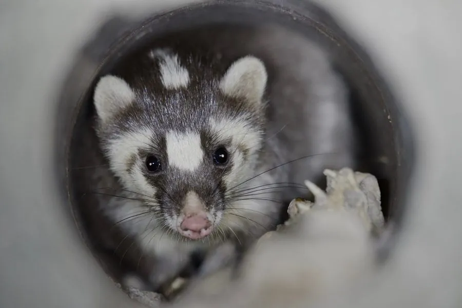

哺乳动物 · 动物界
鼬獾 Melogale moschata

中国南方的小型鼬科动物，面部有黑白面罩状花纹，鼻端像小猪一样拱土，夜行独居，以蚯蚓和昆虫为食。
- 分类
- 门脊索动物门纲哺乳纲目食肉目科鼬科属鼬獾属
- 栖息环境
- 丘陵、山地森林、灌丛与农田附近
- 地理分布
- 中国南方、中南半岛及印度东北部
- 保护级别
- IUCN 无危（LC）；中国“三有”保护动物
物种志
鼬獾体长 0.33–0.43 米，尾长 0.15–0.2 米，体重 0.5–1.8 kg。它的体形细长，被毛为灰褐至黑褐色，面部有白色和黑色相间的面罩状斑纹，头顶有浅色纵纹；吻部突出、鼻端裸露，前爪发达，适合挖掘。
鼬獾分布于中国南方、中南半岛和印度东北部的丘陵、山地森林、灌丛和农田附近，适应力较强。它多在夜间单独活动，白天在洞穴或石缝中休息，用鼻端拱土和落叶层寻找蚯蚓、昆虫、蜗牛、小型脊椎动物和果实。鼬獾性情较凶猛，遇敌时会从肛腺释放臭气。雌性妊娠期约 60–70 天，每胎 2–3 仔。鼬獾在中国南方较为常见，目前被列为无危，中国将其列入“三有”保护动物名录。
形态与习性
- 食性蚯蚓、昆虫、蜗牛、小型脊椎动物与果实
- 体长0.33–0.43 m，尾长 0.15–0.2 m
- 体重0.5–1.8 kg
- 寿命野外约 5–8 年
- 繁殖妊娠期约 60–70 天，每胎 2–3 仔
- 活动节律夜间单独活动
- 防御遇敌时从肛腺释放臭气
趣味知识
- 鼬獾面部有黑白相间的面罩状花纹，十分醒目。
- 它用突出的鼻端拱土和落叶层寻找蚯蚓和昆虫。
- 鼬獾遇敌时会从肛腺释放臭气自卫。
- 中国将鼬獾列入“三有”保护动物名录。